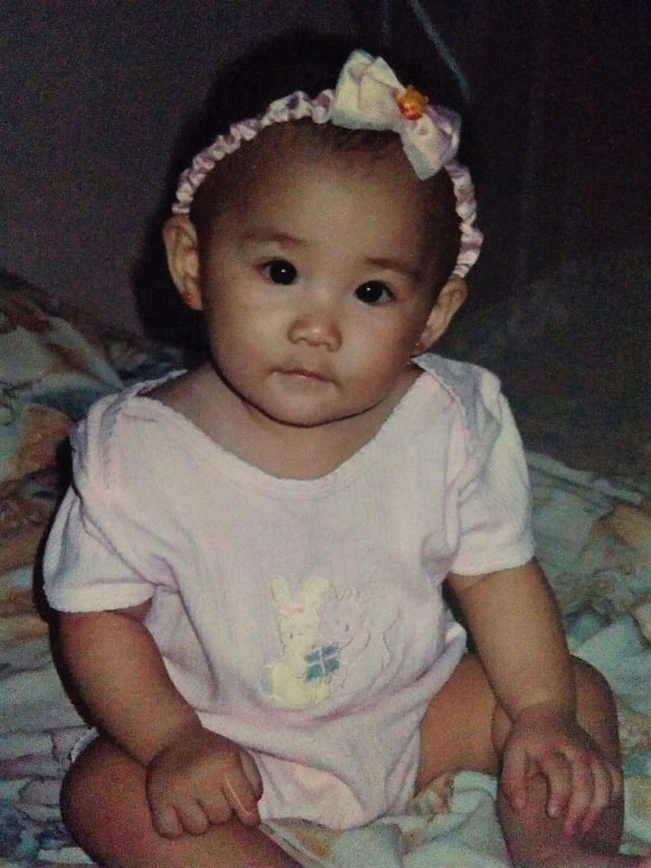
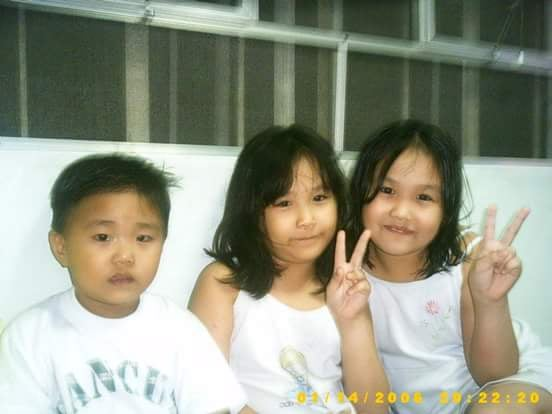
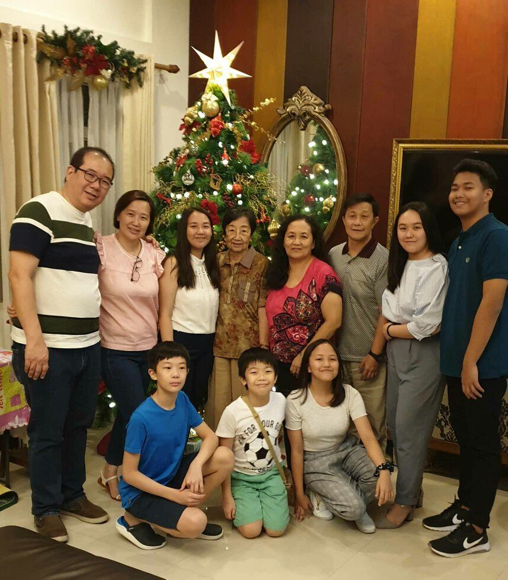
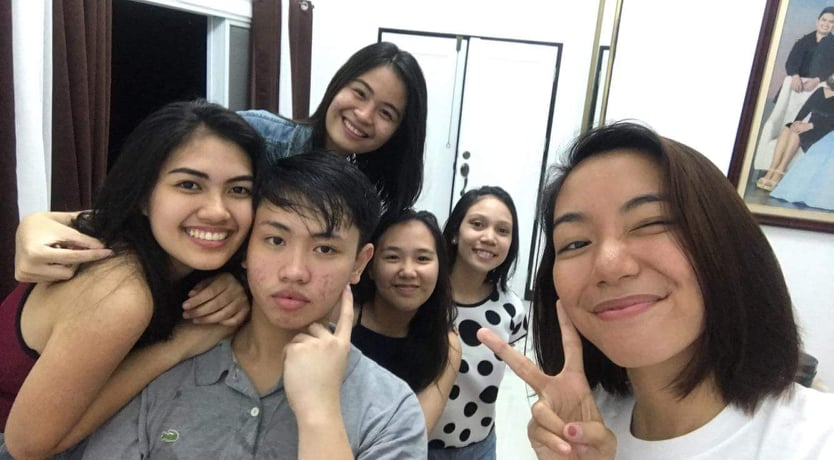
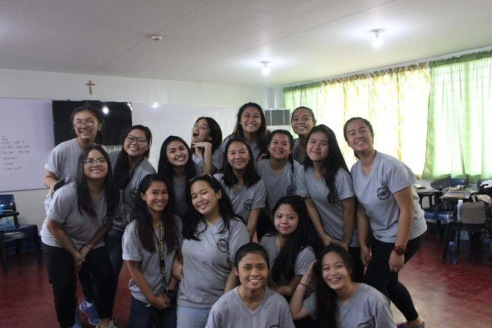
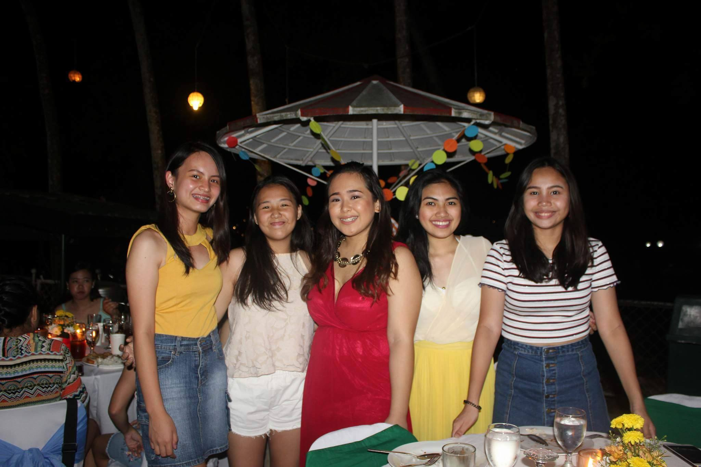
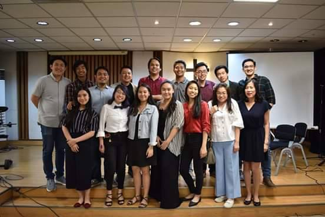
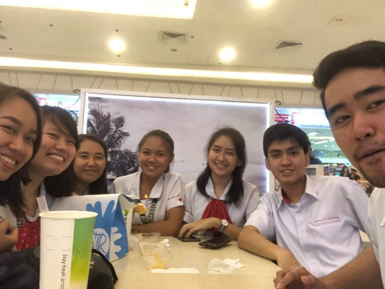
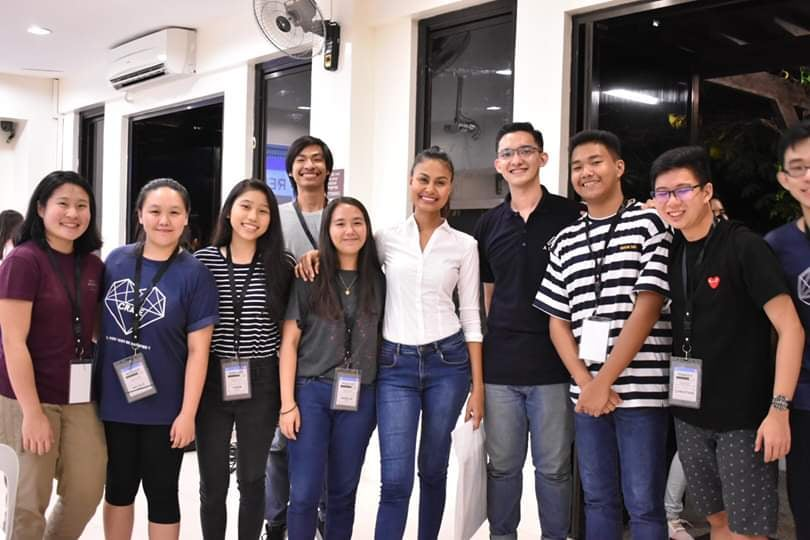

BACK TO HOMEPAGE
CHILDHOOD
TEENAGE
COLLEGE


 I am Noelle Alyanna M. Lim but my family also call me "Nian". 1 I was born on November 24, 1999, Wednesday at Metropolitan Hospital in Manila. 2 The reason why I was named Noelle is because, my papa wanted to have a little junior. 3 So technically I am a the girl version of him, and I won't even complain because we have the same characteristics.4 I am the second child of us four siblings and me my ate are the closest since we're just one year apart.5 Ever since I was young, we lived in Marikina City and had been staying here for more than 20 years. 6 Fun fact about this house, my lolo built this for us and we are one of the first families to live in this subdivision. 7 I remember these photos, my mom use to say that she loves dressing us up after having two girls in an instant. 8 Life was already tough for us from the time we we're born. 9  Me and my ate are always sick, experiencing high fever, combulsions and even UTI. 10 This has led us to emergency in hospitals all the time and one of the reasons why we had financial problems. 11 Though we have those family issues, we remain happy and contented with what we have. 12 During the first five years, when two of us are the only "bulinggit" in the family, we were overwhelmed by parental guidance since most of the people here are adults. 13 Different people took care of us, from the close family, extended family and far relatives they were all present. 14 They were so strict that they won't let us play outside with other kids. 15  Also, I remember belts, hangers, wood are my worst enemy and even the walls because we had to face them when we have done something wrong. 16 We have experienced so much discipline and I won't ever forget them. 17 Being the first batch of children in the Lim Family, we were spoiled not just in the material side but with love. 18 Then when my brother existed, my grandparents (angkong and amah) were so happy because having a boy means so much for Chinese families. 19 They made sure that the boys are the future of the family and will take care of the name that will surely live their lives for our ancestors. 20 I would say, my childhood years were so memorable and fun even though I cried a lot. 21 I will always treasure them. 22
 During my teenage years I believed it was roller coaster ride. 1 This was the time when I started high school, a fresh start in a new school. 2 By this time it was already my fourth school after transfering in between my elementary days. 3 I was really afraid to socialize and interact with people I met for the first time. 4 But, I remained strong and believed that I need to go out of my comfort zone to have a great year. 5 Throughout my first year, I met friends who were kind and approachable but I was sure that not all of them will last.6 But as we finished another year, by then I was sure of the few people, five to be exact who remained with me in my ups and downs.7  As you can see from the photo on the left, these were my friends from high school and we are still together. 8 I discovered so much about myself amongst those years. 9 I pushed myself to the limit and joined dance competitions, became a host for school events and part of the class topnotchers.10 That's why I appreciate my teachers so much because they made sure that I'd be able to maximize my abilities. 11 As I graduated highschool, we were half-hearted upon knowing that we are part of the first batch for SHS.12 But looking on the bright side, it was a good experience and I enjoyed the environment of my new school at that time. 13  The school I went to during my SHS days is SBS and it is an exclusive Catholic school for girls.14 Though I only stayed for two years, it was one of the best decision I've ever made because I had the best people with me.15 I made relationships that I'm sure of will last for a life time. 16 I remembered in our SHS class, we were only 28 in the class and we are very close to one another. 17 We've encountered girl fights, to open forums, to class projects that eventually made us unite together as a class. 18 As we were on our last days in SBS and practicing our graduation, we were very emotional leaving the school and teachers that has been like a family to us. 19 I was grateful for this opportunity because I became part of With High Honors, which made my parents proud and happy. 20
 Then came my college years, this was the time when I had to make major and adult decisions. 1 Decisions that will secure my future with the course I will take and join organizations that I may find support in all aspects of my life.2 I remember during the enrollment, due to my family having financial problems, I worked part-time. 3 After school I go to work and when I get home I get to do my homeworks. 4 And God really works in mysterious ways, he gave me a sponsor that helped me pay for the last two months left of my tuition.5 Another year came and application for Student Assistants was open, then I thought it is a great idea for me to try because it will also help my family. 6 Right then and there after all the waiting and passing, I was accepted and I was very happy for the opportunity being able to serve my college. 7 As for the first day of my college life, though I just met them for the first time, we were already close to one another.8  I even remember, some of our classmates find it weird that we were already very noisy and thought we all came from one school.9 And I am tremendously happy that I met them because they are now like my siblings, who I can trust and rely on.10 To be honest, I even met someone who gave me inspiration to study well and to whom I look forward to an exciting future with.11 More than just the fun and excitement, I also experienced disappointements and lack of motivation in studying.12 I began to compare my abilities to classmates and tried to keep up with them.13 This made me hopeless at the time because I had no background in coding and I don't think I'll ever learn.14  But with the help of my classmates and the lectures of my professors, I began to enjoy to learn and practice my coding skills.15 And I know for myself that I'm still in the process of learning and getting the hang of it. 16 During the college years, my college life wasn't just the highlight of it but also me being part of our church youth core leaders.17 They are very close to my heart because they motivate me and give me the eagerness to know God in a deeper level.18 It is really my desire let other people know and experience the same happiness I have, and that is to be in His presence and being part of a family like this. 19 It's just very comforting to know that especially in this college life, when there are times that I feel discouraged or unmotivated I know where to cling to and get my strength from.20